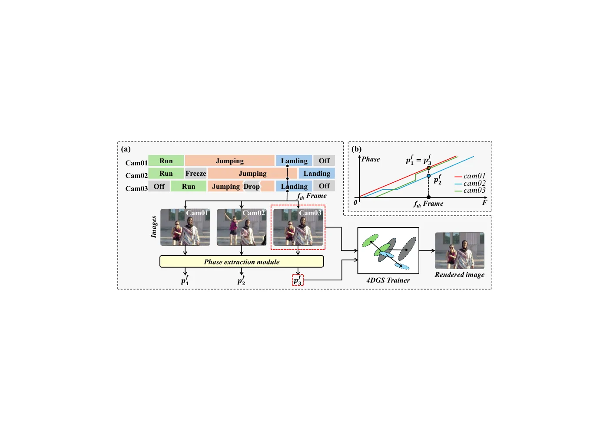
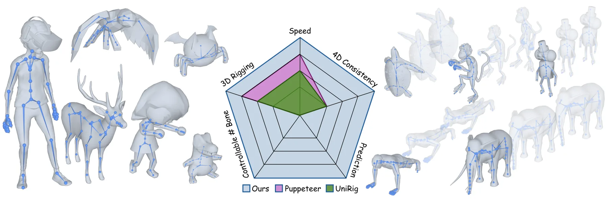
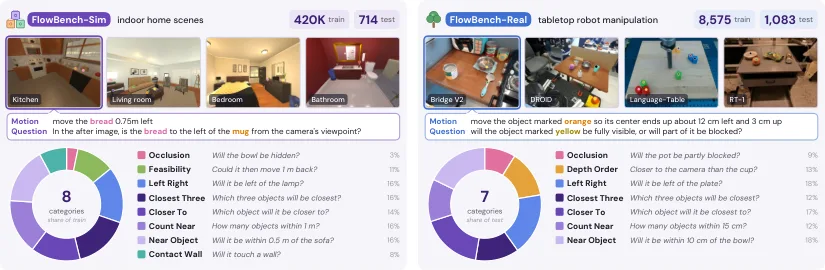
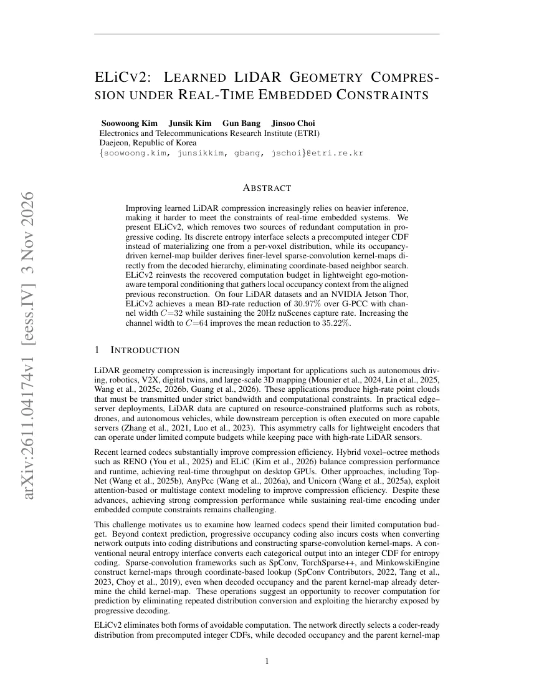
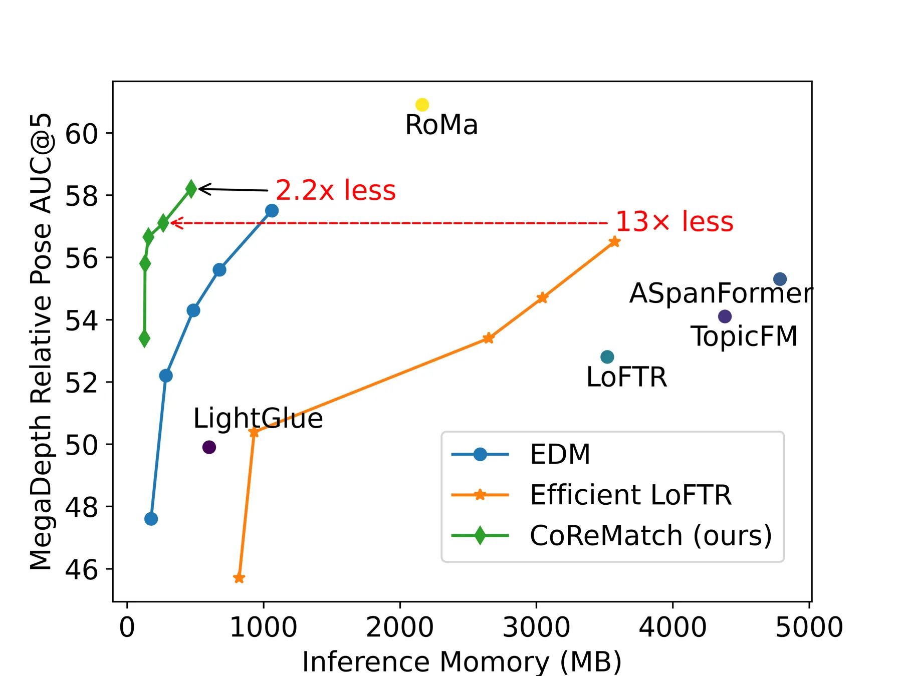

新论文 · 日期 2026-11-04 · score 20 · S层 · 3D/4D Spatial Perception · cs.CV, cs.GR
内容级别：完整单篇海报
作者：Hosung Jeon, Jun Young Jeong, Sangwoon Kwak, Joonsoo Kim, Sangmin Kim, Jaesik Park, Won-Sik Cheong, Hyon-Gon Choo
评分 9/10
动态高斯泼溅多相机时间同步语义相位DINOv2特征库4D 重建
一句话工作总结：把“同步”从硬件问题改写成内容对齐问题：DINOv2 特征加 MLP 预测每帧相位，替换 4DGS 的时间戳；SelfCap 丢帧条件下 FreeTimeGS 主干从 27.894 dB 升到 34.379 dB，训练显存 +30.5%、迭代速度慢 2.11 倍，渲染端零额外开销。
动态高斯泼溅（DGS）默认所有相机逐帧严格同步，而真实采集里触发延迟、丢帧与相机冻结都会破坏这一假设。Phase-DGS 不再估计相机之间的绝对时间偏移，而是为每张图像推断一个位于 [0,1] 的“语义相位”，表示该帧在运动周期中的位置；同一运动状态在不同相机、不同时刻被拍到时会被赋予同一相位，于是相位取代时间戳成为 4DGS 的时间坐标。方法由预训练 DINOv2 编码器、三层 MLP 相位投影器和可学习特征库组…
Spatiotemporal scene reconstruction with Dynamic Gaussian Splatting (DGS) fundamentally depends on perfect temporal synchronization across all cameras, an assumption rarely achievable in practice. Industry-sta…

新论文 · 日期 2026-11-04 · score 12 · S层 · 3D/4D Spatial Perception · cs.CV, cs.GR
内容级别：完整单篇海报
作者：Fengzhi Guo, Nate Morrill, Shiqi Li, Cheng Zhang
评分 8/10
流匹配骨架绑定4D 网格集合预测时序一致性不确定性
一句话工作总结：用 128 个骨架槽位 + DiT 流匹配一次生成整段骨架：TexVerse 24 帧窗口 J2J 从 0.0163 降到 0.0142，骨数偏差、图结构距离与汉明距离全部为 0（基线为 3.18/0.265/14.19），单网格推理 1.1 s；代价是依赖上游时间对齐的网格序列。
自动绑定（rigging）长期分裂为两条路线：静态 3D 方法质量高但骨数控制弱、逐帧套用到动态网格会抖动；4D 方法多依赖逐序列优化，代价高。FlowRig 把骨架生成写成以网格为条件的流匹配问题：用冻结的 Michelangelo 点云编码器提取每帧条件 token，在 128 个骨架槽位上做集合预测，一次前向即可输出整段序列时间对齐的骨架，单个网格输入时自然退化为 3D 绑定。模型附带图头预测运动学树、不确定…
Automatic rigging is a fundamental task for both static 3D and dynamic 4D mesh animation, yet existing methods do not provide a unified feedforward solution for these two settings. While static 3D riggers achi…
新论文 · 日期 2026-11-04 · score 11 · A层 · Robotic Foundation Models / VLA · cs.RO, cs.AI, cs.LG
内容级别：半海报
作者：Yueh-Hua Wu, Kei Ota, Hanlong Li, Hayata Yuasa, Jason Wang, Kengo Ikeuchi, Kensuke Chiyoma, Makoto Sugiura, Masafumi Takahashi, Masatoshi Tateno, Naoaki Kanazawa, Nicola Scianca, Petr Khrapchenkov, Satoshi Otsubo, Takehiko Ohkawa, Takuya Okubo, Tatsuya Matsushima, Yuki Noguchi, Yuma Shin, Zixuan Zhong
评分 9/10
手持数据视觉-语言-动作跨载体长程任务阶段预测流式解码
一句话工作总结：把状态/动作锚在夹爪坐标系，用 1.6 万小时手持数据预训练，再加阶段预测与本体记忆做长程任务：十任务平均 78%（最强基线 27%），未见场地、仅两个腕部相机、同一权重跨四种机器人；后训练单任务 < 4 小时（8×H200）。
A-0 是一套双臂操作策略，训练数据全部来自 YUBI 手持夹爪的 16,151 小时人类演示（1,065 万个子任务片段），全程没有机器人数据、遥操作、强化学习或仿真。状态与动作都定义在夹爪自身：动作是相对当前观测位姿的目标位姿，状态是两夹爪相对位姿加开度，因此同一套数值同时描述人手与机器人。在 π0.5 主干上，A-0 加入视觉证据预算门、子任务辅助预测、阶段头与本体感受记忆，推理端用阶段 EMA 与非均匀流式…
AIRoA-0 (A-0) is a bimanual manipulation system learned from 16,151 hours of handheld demonstrations, with no robot data collected at any stage. The demonstrations are recorded with YUBI, our open-source handh…
新论文 · 日期 2026-11-04 · score 9 · A层 · Robotic Foundation Models / VLA · cs.RO, cs.AI
内容级别：半海报
作者：Deng-Ke Wu, Yifan Jin, Yida Yang, Lei Qian, Zhaoye Zhou, Hongru Zhang, Kai Ye, Shuyuan Hu, Yiran Mao, Zewei Ye, Bo Zhao
评分 8/10
评测基础设施策略评测并发调度动作块可复现性CUDA MPS
一句话工作总结：统一 Policy 接口 + 基准适配器 + 双池调度 + 动作块边界渲染：LIBERO-Long 500 episode 从 2,990 s 降到 671 s（4.45×），开 CUDA MPS 到 485 s（6.16×），成功率 89.9% 对官方 90.2%（等价区间内）；四卡 RoboTwin 500 episode 从 21,582 s 降到 862 s（25.0…
仿真基准各自带一套评测器、观测布局与动作约定，导致“N 个模型 × M 个基准”要重复集成 N×M 次；同时评测本身很慢：单 GPU 跑 500 个 RoboTwin Easy episode 需要 359.7 分钟，剖析显示仿真占满 CPU 而 GPU 平均利用率只有 14.3%。RoboScope Kit 把每个模型包成一个 Policy 类、每个基准包成一个适配器，保留基准原有的任务、初始状态、终止与计分规则…
Simulation benchmarks are the standard way to compare robot policies, but each benchmark brings its own evaluator, observation layout, and action convention, and evaluation is slow: 500 RoboTwin Easy episodes…

新论文 · 日期 2026-11-04 · score 7 · A层 · Embodied Navigation / VLN / Spatial Reasoning · cs.CV
内容级别：半海报
作者：Yifan Liu, Baihan Zhang, Khai Loong Aw, Klemen Kotar, Daniel L. K. Yamins
评分 8/10
空间推理反事实想象基准与数据集世界模型视觉语言模型sim-to-real
一句话工作总结：把“想象运动后的空间关系”做成多选题基准与训练集：Sim 42 万题 + Real 1,083 测试题，开源 VLM 接近随机（41–50%），在 Sim 上微调后真实测试 +16.9 点；世界模型侧 PSI-0.6 文本到光流从 52.1% 升到 61.7%。
人类能想象“如果物体这样移动，场景的空间关系会怎么变”，而视觉语言模型与世界模型在这件事上仍缺少统一评测。FlowBench 把这一能力形式化为反事实空间想象（CSI）：给定初始图像、假设运动与空间问题，模型必须在没看到结果的情况下回答结果场景。仿真侧用 AI2-THOR/ProcTHOR 自动生成 42 万条训练题（含结果帧、光流、深度、语义与推理注释），真实侧从 Bridge V2、DROID 等机器人视频构造…
Humans imagine scene changes under hypothetical motions, an ability central to spatial reasoning and robotic planning. However, this capability remains underexplored in vision-language models and world models.…

新论文 · 日期 2026-11-04 · score 7 · A-层 · Real-time / GPU Robotics Systems · eess.IV
内容级别：简报式摘要
作者：Soowoong Kim, Junsik Kim, Gun Bang, Jinsoo Choi
评分 7/10
LiDAR 压缩嵌入式实时稀疏卷积熵编码Jetson Thor
一句话工作总结：把熵编码与稀疏卷积接口的冗余计算换成查表与层级传播，再把省下的算力用于自运动对齐的时序上下文：Jetson Thor 上 C=32 平均 BD-rate −30.97%（nuScenes 上相对 G-PCC intra −43.15%），仍保持 20 Hz。
学习式 LiDAR 压缩越来越依赖更重的推理，难以满足嵌入式实时约束。ELiCv2 去掉渐进编码里两处冗余计算：离散熵接口直接从预计算整数 CDF 中选取分布，而不是逐体素物化；占用驱动的 kernel-map 构造直接从已解码层级推导细层稀疏卷积的 kernel-map，省掉坐标邻域搜索。省下的预算被投入到轻量的、由自运动对齐的上一帧提供局部占用上下文的时序条件化上。在四个 LiDAR 数据集与 NVIDIA J…
Improving learned LiDAR compression increasingly relies on heavier inference, making it harder to meet the constraints of real-time embedded systems. We present ELiCv2, which removes two sources of redundant c…

新论文 · 日期 2026-11-04 · score 8 · B-层 · Traditional LiDAR/Visual SLAM · cs.RO, cs.CV
内容级别：简报式摘要
作者：Robert J. Wang, Charles Ling, Boyu Wang
评分 7/10
特征匹配半稠密匹配嵌入式部署视觉里程计AGX Orin
一句话工作总结：用“循环坐标回归 + 一次聚合的深窄 Transformer + 局部亚像素回归”替代高分辨率置信图：MegaDepth AUC@5 57.4（ELoFTR 56.4）而耗时 177 ms 对 2,067 ms；ScanNet 22.8 对 19.2；KITTI VO ATE 6.98 m 对 10.17 m。
半稠密匹配器通常在固定网格上预测置信度，对应点被限制在预定义位置，要高精度就得提高网格分辨率，而 Transformer 的耗时随分辨率急剧上升：Efficient LoFTR 在 AGX Orin 上处理 640×640 图像对需 311 ms，升到 960×960 就慢 4.5 倍，1152×1152 超过 2 秒。CoReMatch 把匹配改写成连续坐标的循环 refinement：粗层用 Deep Aggr…
Feature matching underpins many robotic perception tasks, including visual localization, mapping, SLAM, and autonomous navigation. Existing semi-dense matchers predict confidence on fixed grids, limiting corre…